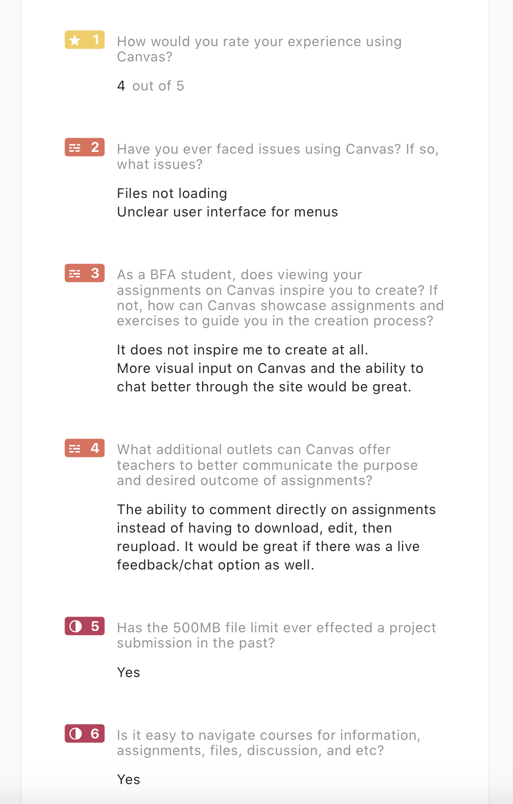
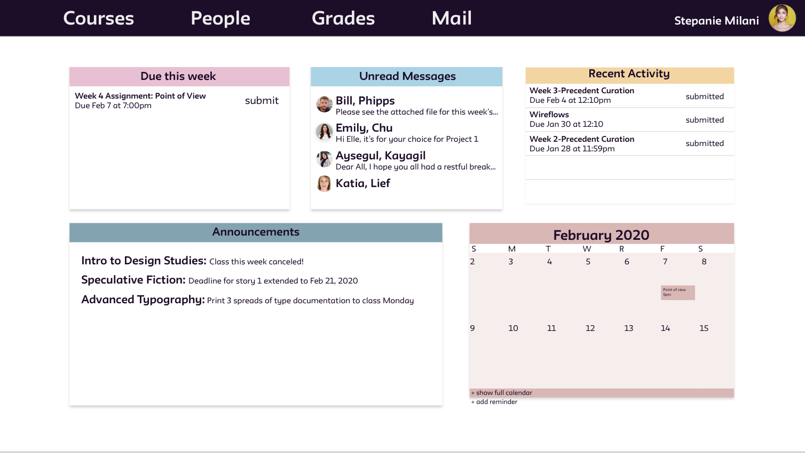
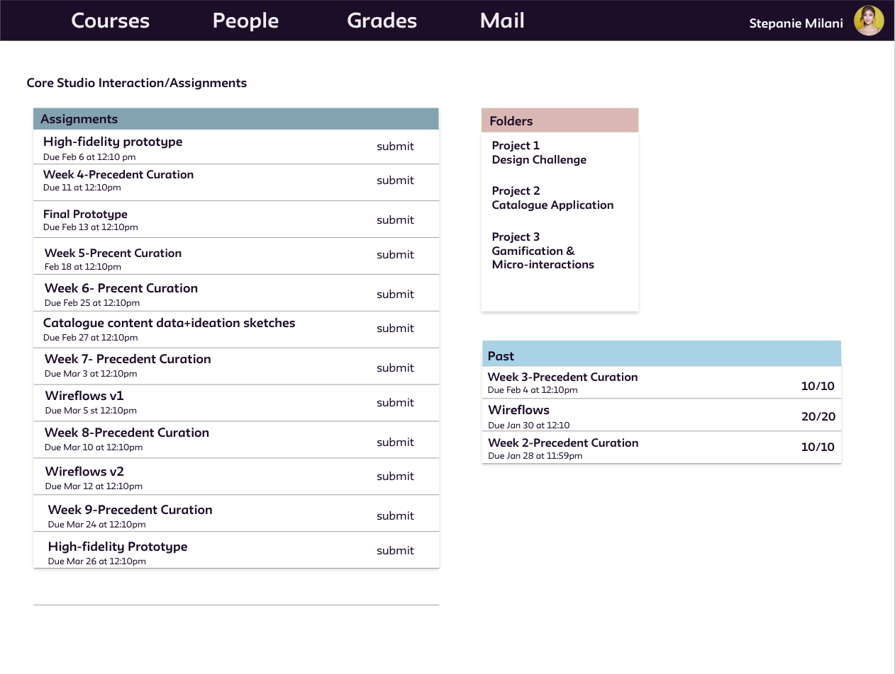
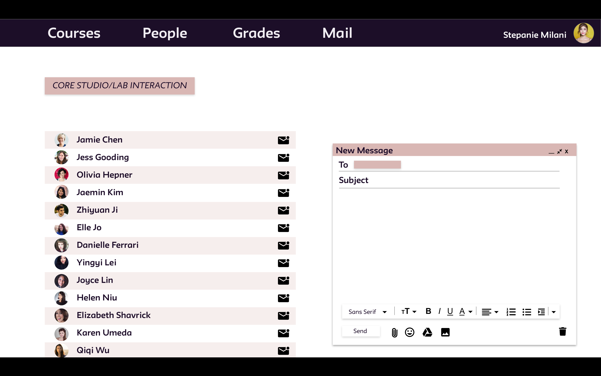
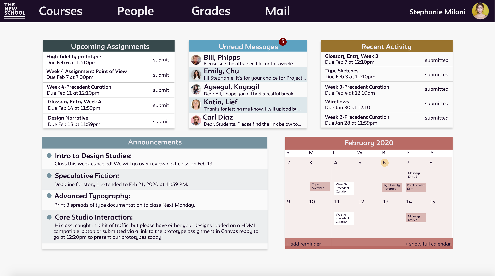
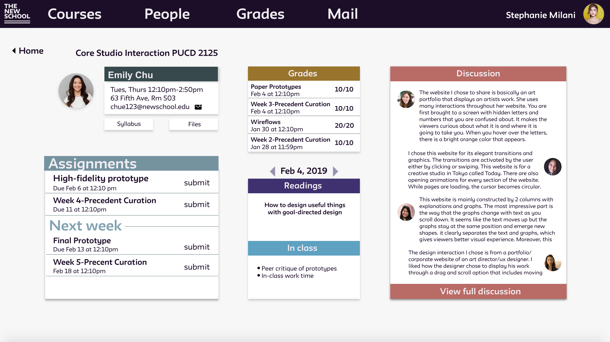
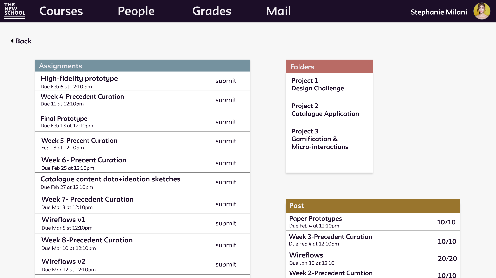
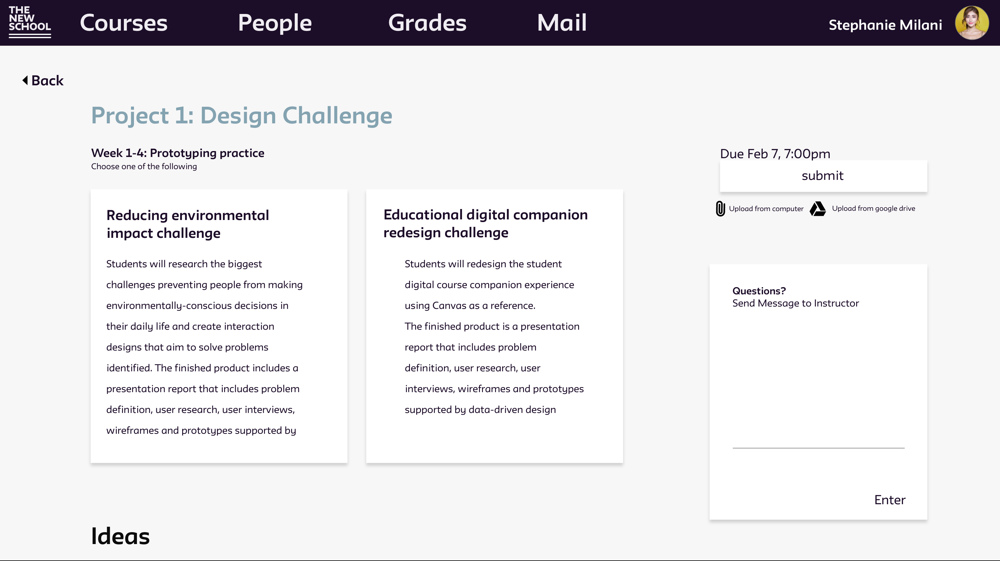
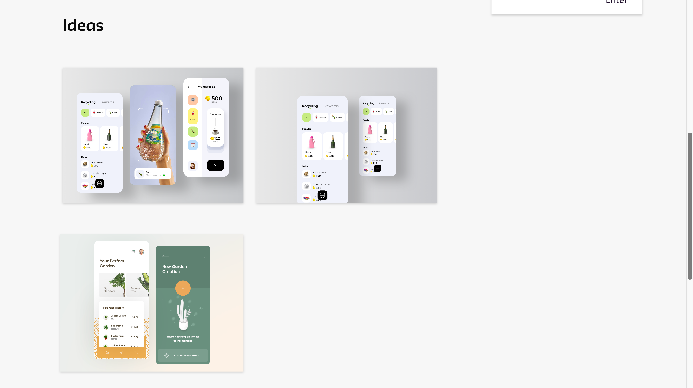
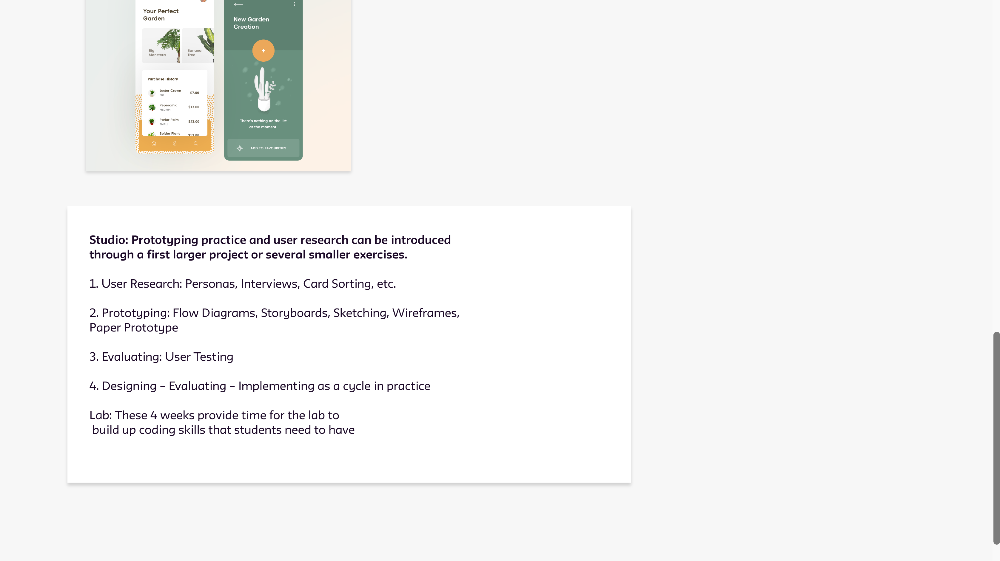

Canvas Student is an educational institution platform that allows students to access their courses,calenders, class notifications, and etc. The purpose of this project is to redesign the site structure to be suitable for BFA Students of the Newschool based on the lack of visual input and limited communication between instructor and student.
Research question
How can Canvas be improved to enhance user experience for BFA students in The NewSchool?
The student companion course will be restructured to provide students with inspiration and direction in their creative process. It is important to include visual input and provide faster access to important files and projects. The visual aesthetic can be rendered to display information in a way that is resourceful and convienient for the student.
User survey
Have you ever faced issues using Canvas? If so, what kind of issues?
As a BFA student, does viewing your assignments on Canvas inspire you to create? If not, how can Canvas showcase assignments and exercises to guide you in the creation process?
Is it easy to navigate course information, assignments, and files?
What additional tools can Canvas offer teachers to better communicate the purpose and desired outcome of assignments?
Link to user survey link
Survey results
Based on the Survey answers, canvas does not provide a good chat system that connects students to their teachers. It does not help in terms of creativity or craft in the earlier stages of developing an idea.


Ideation
Wireflows

Prototype
The Home page of the site includes the important announcments, unread messages, due assignments, and a calender of the month. The top shows a panel of courses, people, grades, and mail where students can easily navigate information.



Final Prototype
Link to Prototype





